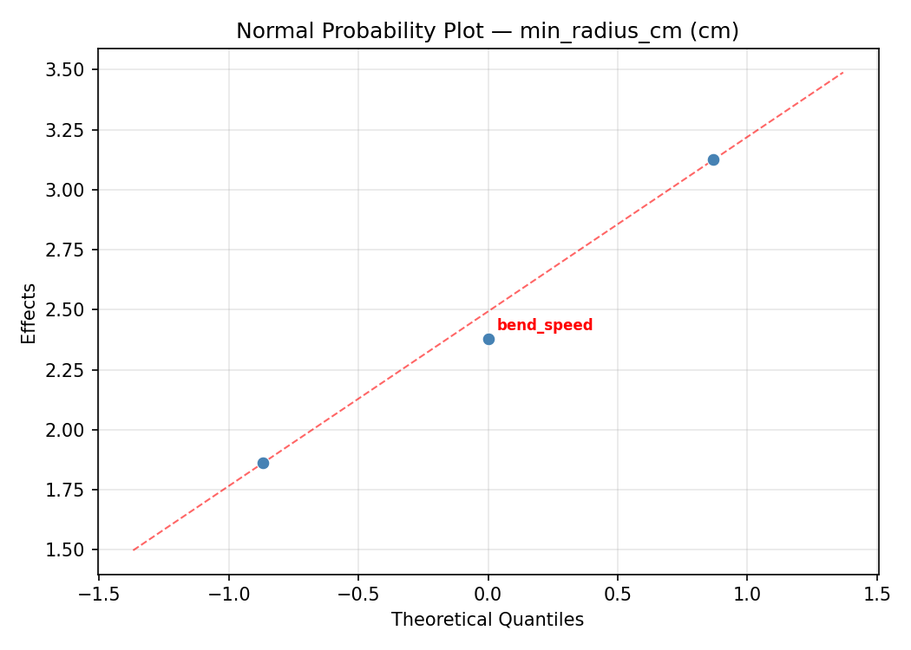
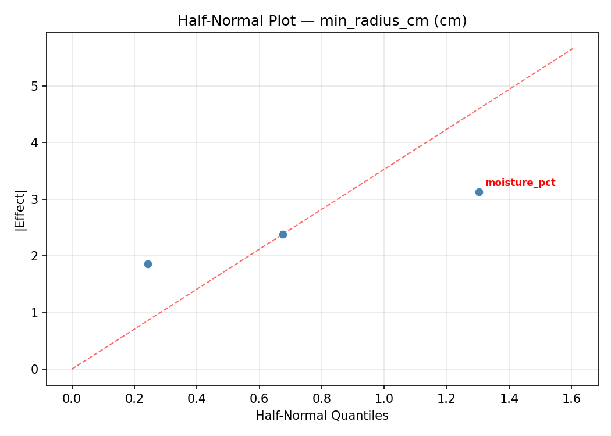
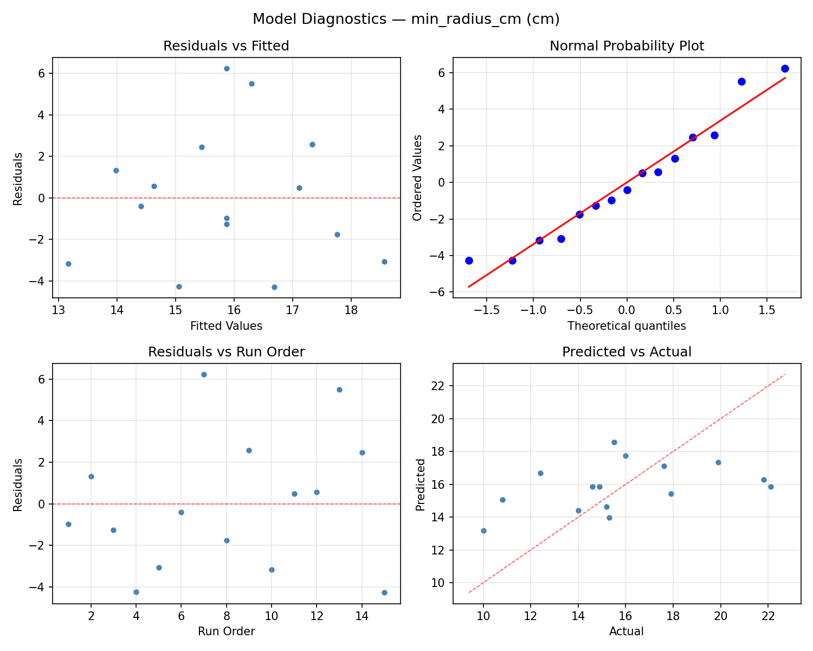
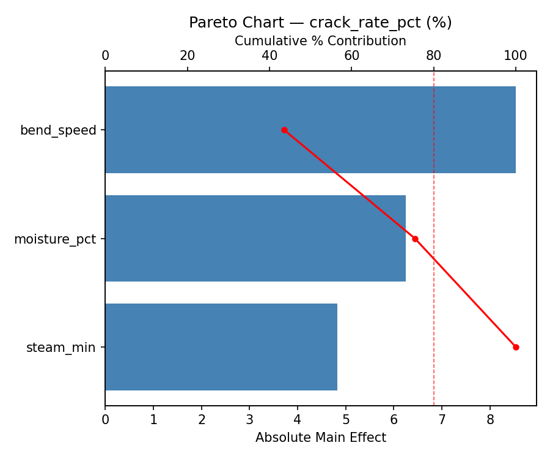
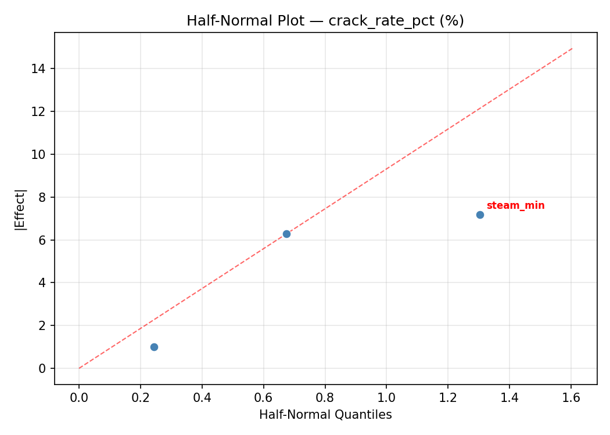
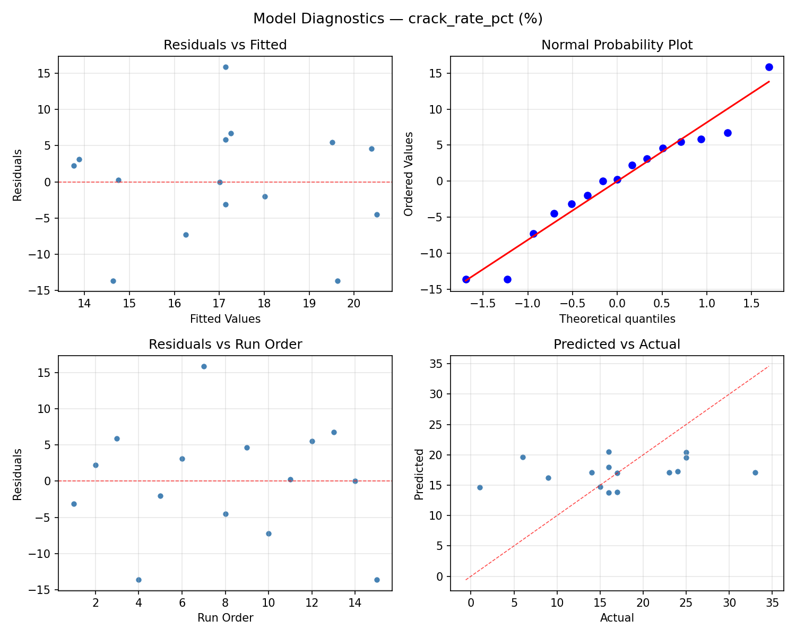
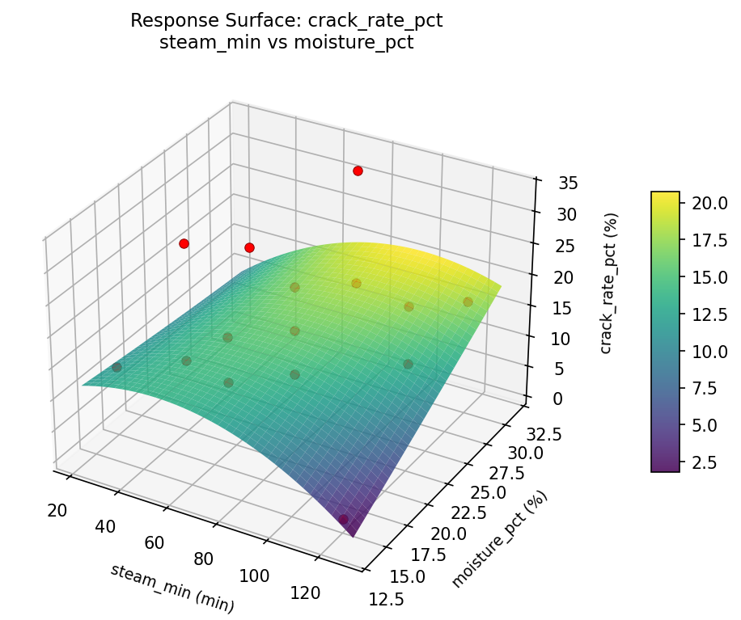
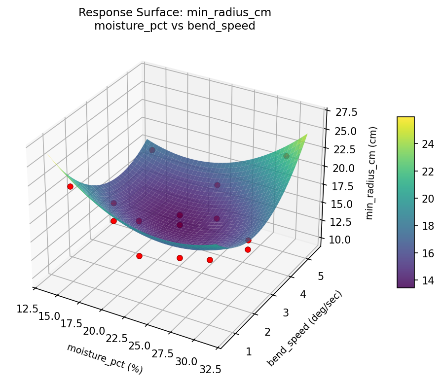

Summary
This experiment investigates steam bending parameters. Box-Behnken design to maximize bend radius achievable and minimize cracking by tuning steam time, wood moisture content, and bending speed.
The design varies 3 factors: steam min (min), ranging from 30 to 120, moisture pct (%), ranging from 15 to 30, and bend speed (deg/sec), ranging from 1 to 5. The goal is to optimize 2 responses: min radius cm (cm) (minimize) and crack rate pct (%) (minimize). Fixed conditions held constant across all runs include wood species = white_ash, thickness mm = 20.
A Box-Behnken design was chosen because it efficiently fits quadratic models with 3 continuous factors while avoiding extreme corner combinations — requiring only 15 runs instead of the 8 needed for a full factorial at two levels.
Quadratic response surface models were fitted to capture potential curvature and factor interactions. The RSM contour plots below visualize how pairs of factors jointly affect each response.
Key Findings
For min radius cm, the most influential factors were bend speed (41.4%), steam min (29.9%), moisture pct (28.7%). The best observed value was 10.0 (at steam min = 30, moisture pct = 15, bend speed = 3).
For crack rate pct, the most influential factors were bend speed (50.2%), moisture pct (25.1%), steam min (24.7%). The best observed value was 1.0 (at steam min = 120, moisture pct = 22.5, bend speed = 1).
Recommended Next Steps
- Run confirmation experiments at the predicted optimal settings to validate the model.
- Consider whether any fixed factors should be varied in a future study.
Experimental Setup
Factors
| Factor | Low | High | Unit |
|---|
steam_min | 30 | 120 | min |
moisture_pct | 15 | 30 | % |
bend_speed | 1 | 5 | deg/sec |
Fixed: wood_species = white_ash, thickness_mm = 20
Responses
| Response | Direction | Unit |
|---|
min_radius_cm | ↓ minimize | cm |
crack_rate_pct | ↓ minimize | % |
Configuration
{
"metadata": {
"name": "Steam Bending Parameters",
"description": "Box-Behnken design to maximize bend radius achievable and minimize cracking by tuning steam time, wood moisture content, and bending speed"
},
"factors": [
{
"name": "steam_min",
"levels": [
"30",
"120"
],
"type": "continuous",
"unit": "min"
},
{
"name": "moisture_pct",
"levels": [
"15",
"30"
],
"type": "continuous",
"unit": "%"
},
{
"name": "bend_speed",
"levels": [
"1",
"5"
],
"type": "continuous",
"unit": "deg/sec"
}
],
"fixed_factors": {
"wood_species": "white_ash",
"thickness_mm": "20"
},
"responses": [
{
"name": "min_radius_cm",
"optimize": "minimize",
"unit": "cm"
},
{
"name": "crack_rate_pct",
"optimize": "minimize",
"unit": "%"
}
],
"settings": {
"operation": "box_behnken",
"test_script": "use_cases/204_wood_bending/sim.sh"
}
}
Experimental Matrix
The Box-Behnken Design produces 15 runs. Each row is one experiment with specific factor settings.
| Run | steam_min | moisture_pct | bend_speed |
|---|
| 1 | 75 | 15 | 1 |
| 2 | 75 | 22.5 | 3 |
| 3 | 120 | 22.5 | 5 |
| 4 | 120 | 22.5 | 1 |
| 5 | 75 | 22.5 | 3 |
| 6 | 75 | 22.5 | 3 |
| 7 | 30 | 22.5 | 5 |
| 8 | 120 | 15 | 3 |
| 9 | 75 | 15 | 5 |
| 10 | 120 | 30 | 3 |
| 11 | 30 | 22.5 | 1 |
| 12 | 75 | 30 | 5 |
| 13 | 30 | 15 | 3 |
| 14 | 30 | 30 | 3 |
| 15 | 75 | 30 | 1 |
Step-by-Step Workflow
1
Preview the design
$ python doe.py info --config use_cases/204_wood_bending/config.json
2
Generate the runner script
$ python doe.py generate --config use_cases/204_wood_bending/config.json \
--output use_cases/204_wood_bending/results/run.sh --seed 42
3
Execute the experiments
$ bash use_cases/204_wood_bending/results/run.sh
4
Analyze results
$ python doe.py analyze --config use_cases/204_wood_bending/config.json
5
Get optimization recommendations
$ python doe.py optimize --config use_cases/204_wood_bending/config.json
6
Multi-objective optimization
With 2 competing responses, use --multi to find the best compromise via Derringer–Suich desirability.
$ python doe.py optimize --config use_cases/204_wood_bending/config.json --multi
7
Generate the HTML report
$ python doe.py report --config use_cases/204_wood_bending/config.json \
--output use_cases/204_wood_bending/results/report.html
Features Exercised
| Feature | Value |
|---|
| Design type | box_behnken |
| Factor types | continuous (all 3) |
| Arg style | double-dash |
| Responses | 2 (min_radius_cm ↓, crack_rate_pct ↓) |
| Total runs | 15 |
Analysis Results
Generated from actual experiment runs using the DOE Helper Tool.
Response: min_radius_cm
Top factors: bend_speed (41.4%), steam_min (29.9%), moisture_pct (28.7%).
ANOVA
| Source | DF | SS | MS | F | p-value |
|---|
| Source | DF | SS | MS | F | p-value |
| steam_min | 2 | 7.6973 | 3.8486 | 0.263 | 0.7754 |
| moisture_pct | 2 | 8.6640 | 4.3320 | 0.296 | 0.7518 |
| bend_speed | 2 | 17.1758 | 8.5879 | 0.586 | 0.5787 |
| Lack | of | Fit | 6 | 113.6695 | 18.9449 |
| Pure | Error | 2 | 29.3067 | | |
| Error | 8 | 142.9762 | 14.6533 | | |
| Total | 14 | 176.5133 | 12.6081 | | |
Pareto Chart

Main Effects Plot

Normal Probability Plot of Effects

Half-Normal Plot of Effects

Model Diagnostics

Response: crack_rate_pct
Top factors: bend_speed (50.2%), moisture_pct (25.1%), steam_min (24.7%).
ANOVA
| Source | DF | SS | MS | F | p-value |
|---|
| Source | DF | SS | MS | F | p-value |
| steam_min | 2 | 40.0190 | 20.0095 | 0.406 | 0.6795 |
| moisture_pct | 2 | 38.5190 | 19.2595 | 0.390 | 0.6890 |
| bend_speed | 2 | 172.8048 | 86.4024 | 1.751 | 0.2340 |
| Lack | of | Fit | 6 | 575.7238 | 95.9540 |
| Pure | Error | 2 | 98.6667 | | |
| Error | 8 | 674.3905 | 49.3333 | | |
| Total | 14 | 925.7333 | 66.1238 | | |
Pareto Chart

Main Effects Plot

Normal Probability Plot of Effects

Half-Normal Plot of Effects

Model Diagnostics

Response Surface Plots
3D surfaces fitted with quadratic RSM. Red dots are observed data points.
crack rate pct moisture pct vs bend speed

crack rate pct steam min vs bend speed

crack rate pct steam min vs moisture pct

min radius cm moisture pct vs bend speed

min radius cm steam min vs bend speed

min radius cm steam min vs moisture pct

Multi-Objective Optimization
When responses compete, Derringer–Suich desirability finds the best compromise.
Each response is scaled to a 0–1 desirability, then combined via a weighted geometric mean.
Overall Desirability
D = 0.8779
Per-Response Desirability
| Response | Weight | Desirability | Predicted | Dir |
|---|
min_radius_cm |
1.0 |
|
12.40 0.7742 12.40 cm |
↓ |
crack_rate_pct |
1.5 |
|
1.00 0.9545 1.00 % |
↓ |
Recommended Settings
| Factor | Value |
|---|
steam_min | 120 min |
moisture_pct | 22.5 % |
bend_speed | 5 deg/sec |
Source: from observed run #15
Trade-off Summary
Sacrifice = how much worse than single-objective best.
| Response | Predicted | Best Observed | Sacrifice |
|---|
crack_rate_pct | 1.00 | 1.00 | +0.00 |
Top 3 Runs by Desirability
| Run | D | Factor Settings |
|---|
| #4 | 0.8443 | steam_min=30, moisture_pct=30, bend_speed=3 |
| #10 | 0.8108 | steam_min=75, moisture_pct=22.5, bend_speed=3 |
Model Quality
| Response | R² | Type |
|---|
crack_rate_pct | 0.3368 | linear |
Full Multi-Objective Output
============================================================
MULTI-OBJECTIVE OPTIMIZATION
Method: Derringer-Suich Desirability Function
============================================================
Overall desirability: D = 0.8779
Response Weight Desirability Predicted Direction
---------------------------------------------------------------------
min_radius_cm 1.0 0.7742 12.40 cm ↓
crack_rate_pct 1.5 0.9545 1.00 % ↓
Recommended settings:
steam_min = 120 min
moisture_pct = 22.5 %
bend_speed = 5 deg/sec
(from observed run #15)
Trade-off summary:
min_radius_cm: 12.40 (best observed: 10.00, sacrifice: +2.40)
crack_rate_pct: 1.00 (best observed: 1.00, sacrifice: +0.00)
Model quality:
min_radius_cm: R² = 0.5021 (linear)
crack_rate_pct: R² = 0.3368 (linear)
Top 3 observed runs by overall desirability:
1. Run #15 (D=0.8779): steam_min=120, moisture_pct=22.5, bend_speed=5
2. Run #4 (D=0.8443): steam_min=30, moisture_pct=30, bend_speed=3
3. Run #10 (D=0.8108): steam_min=75, moisture_pct=22.5, bend_speed=3
Full Analysis Output
=== Main Effects: min_radius_cm ===
Factor Effect Std Error % Contribution
--------------------------------------------------------------
bend_speed 2.5250 0.9168 41.4%
steam_min 1.8250 0.9168 29.9%
moisture_pct 1.7536 0.9168 28.7%
=== ANOVA Table: min_radius_cm ===
Source DF SS MS F p-value
-----------------------------------------------------------------------------
steam_min 2 7.6973 3.8486 0.263 0.7754
moisture_pct 2 8.6640 4.3320 0.296 0.7518
bend_speed 2 17.1758 8.5879 0.586 0.5787
Lack of Fit 6 113.6695 18.9449 1.293 0.4975
Pure Error 2 29.3067 14.6533
Error 8 142.9762 14.6533
Total 14 176.5133 12.6081
=== Summary Statistics: min_radius_cm ===
steam_min:
Level N Mean Std Min Max
------------------------------------------------------------
120 4 17.0250 3.9161 12.4000 21.8000
30 4 15.2000 3.7211 10.8000 19.9000
75 7 15.5857 3.6803 10.0000 22.1000
moisture_pct:
Level N Mean Std Min Max
------------------------------------------------------------
15 4 17.1250 3.3470 14.9000 22.1000
22.5 7 15.3714 3.4199 10.0000 19.9000
30 4 15.4750 4.6212 10.8000 21.8000
bend_speed:
Level N Mean Std Min Max
------------------------------------------------------------
1 4 15.4500 3.2254 12.4000 19.9000
3 7 15.1000 4.0154 10.0000 21.8000
5 4 17.6250 3.2346 15.2000 22.1000
=== Main Effects: crack_rate_pct ===
Factor Effect Std Error % Contribution
--------------------------------------------------------------
bend_speed 8.0000 2.0996 50.2%
moisture_pct 4.0000 2.0996 25.1%
steam_min 3.9286 2.0996 24.7%
=== ANOVA Table: crack_rate_pct ===
Source DF SS MS F p-value
-----------------------------------------------------------------------------
steam_min 2 40.0190 20.0095 0.406 0.6795
moisture_pct 2 38.5190 19.2595 0.390 0.6890
bend_speed 2 172.8048 86.4024 1.751 0.2340
Lack of Fit 6 575.7238 95.9540 1.945 0.3778
Pure Error 2 98.6667 49.3333
Error 8 674.3905 49.3333
Total 14 925.7333 66.1238
=== Summary Statistics: crack_rate_pct ===
steam_min:
Level N Mean Std Min Max
------------------------------------------------------------
120 4 14.5000 9.6782 1.0000 24.0000
30 4 17.5000 9.2556 6.0000 25.0000
75 7 18.4286 7.6126 9.0000 33.0000
moisture_pct:
Level N Mean Std Min Max
------------------------------------------------------------
15 4 19.7500 8.8835 14.0000 33.0000
22.5 7 16.4286 8.9974 1.0000 25.0000
30 4 15.7500 7.4106 6.0000 24.0000
bend_speed:
Level N Mean Std Min Max
------------------------------------------------------------
1 4 14.7500 10.0125 1.0000 25.0000
3 7 15.2857 6.6261 6.0000 24.0000
5 4 22.7500 7.9320 16.0000 33.0000
Optimization Recommendations
=== Optimization: min_radius_cm ===
Direction: minimize
Best observed run: #10
steam_min = 30
moisture_pct = 15
bend_speed = 3
Value: 10.0
RSM Model (linear, R² = 0.1020, Adj R² = -0.1429):
Coefficients:
intercept +15.8667
steam_min +1.1750
moisture_pct +0.7625
bend_speed +0.5375
RSM Model (quadratic, R² = 0.7710, Adj R² = 0.3589):
Coefficients:
intercept +13.8333
steam_min +1.1750
moisture_pct +0.7625
bend_speed +0.5375
steam_min*moisture_pct -0.7500
steam_min*bend_speed +3.2500
moisture_pct*bend_speed +3.0250
steam_min^2 -0.3292
moisture_pct^2 +1.1958
bend_speed^2 +2.9458
Curvature analysis:
bend_speed coef=+2.9458 convex (has a minimum)
moisture_pct coef=+1.1958 convex (has a minimum)
steam_min coef=-0.3292 concave (has a maximum)
Notable interactions:
steam_min*bend_speed coef=+3.2500 (synergistic)
moisture_pct*bend_speed coef=+3.0250 (synergistic)
steam_min*moisture_pct coef=-0.7500 (antagonistic)
Predicted optimum (from quadratic model, at observed points):
steam_min = 75
moisture_pct = 30
bend_speed = 5
Predicted value: 22.3000
Surface optimum (via L-BFGS-B, quadratic model):
steam_min = 30
moisture_pct = 15
bend_speed = 4.94767
Predicted value: 9.2188
Model quality: Good fit — general trends are captured, some noise remains.
Factor importance:
1. bend_speed (effect: 3.4, contribution: 45.4%)
2. steam_min (effect: 2.3, contribution: 31.2%)
3. moisture_pct (effect: 1.8, contribution: 23.5%)
=== Optimization: crack_rate_pct ===
Direction: minimize
Best observed run: #15
steam_min = 120
moisture_pct = 22.5
bend_speed = 1
Value: 1.0
RSM Model (linear, R² = 0.0246, Adj R² = -0.2414):
Coefficients:
intercept +17.1333
steam_min -0.1250
moisture_pct +1.1250
bend_speed +1.2500
RSM Model (quadratic, R² = 0.5496, Adj R² = -0.2610):
Coefficients:
intercept +15.6667
steam_min -0.1250
moisture_pct +1.1250
bend_speed +1.2500
steam_min*moisture_pct -1.0000
steam_min*bend_speed +5.2500
moisture_pct*bend_speed +4.7500
steam_min^2 -5.8333
moisture_pct^2 +4.1667
bend_speed^2 +4.4167
Curvature analysis:
steam_min coef=-5.8333 concave (has a maximum)
bend_speed coef=+4.4167 convex (has a minimum)
moisture_pct coef=+4.1667 convex (has a minimum)
Notable interactions:
steam_min*bend_speed coef=+5.2500 (synergistic)
moisture_pct*bend_speed coef=+4.7500 (synergistic)
steam_min*moisture_pct coef=-1.0000 (antagonistic)
Predicted optimum (from linear model, at observed points):
steam_min = 75
moisture_pct = 30
bend_speed = 5
Predicted value: 19.5083
Surface optimum (via L-BFGS-B, linear model):
steam_min = 120
moisture_pct = 15
bend_speed = 1
Predicted value: 14.6333
Model quality: Weak fit — consider adding center points or using a different design.
Factor importance:
1. steam_min (effect: 6.6, contribution: 37.0%)
2. bend_speed (effect: 5.8, contribution: 32.6%)
3. moisture_pct (effect: 5.4, contribution: 30.4%)